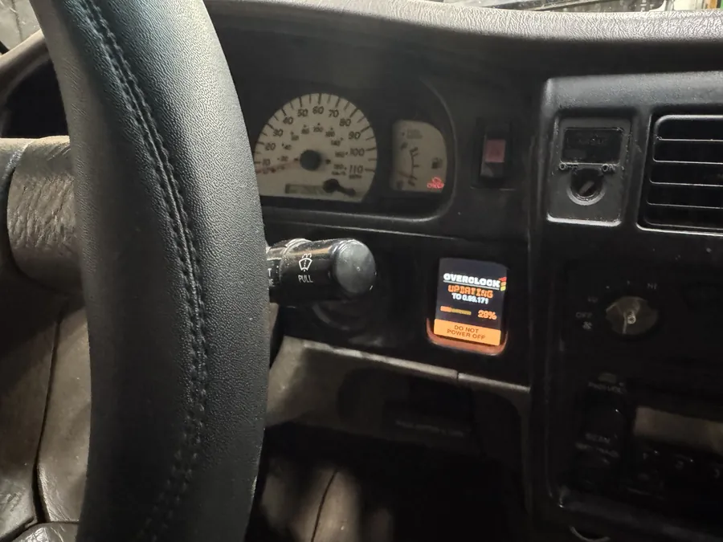
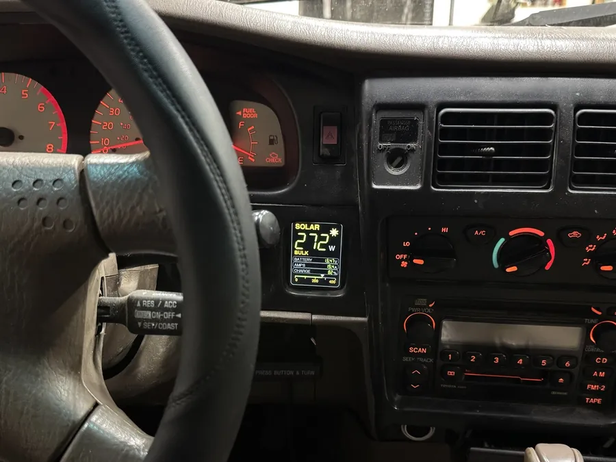
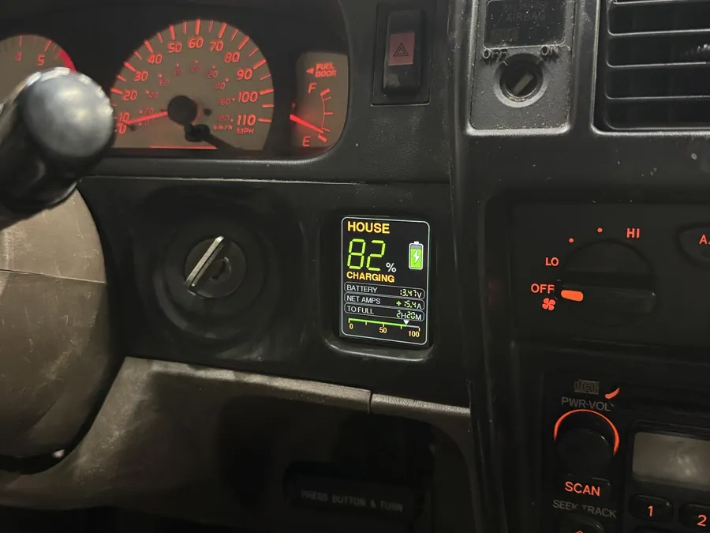
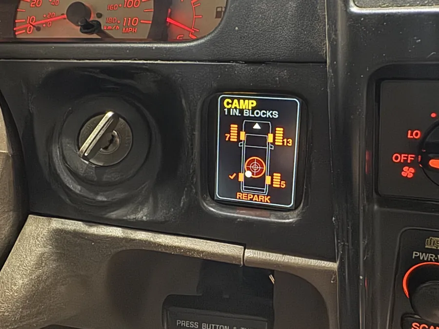
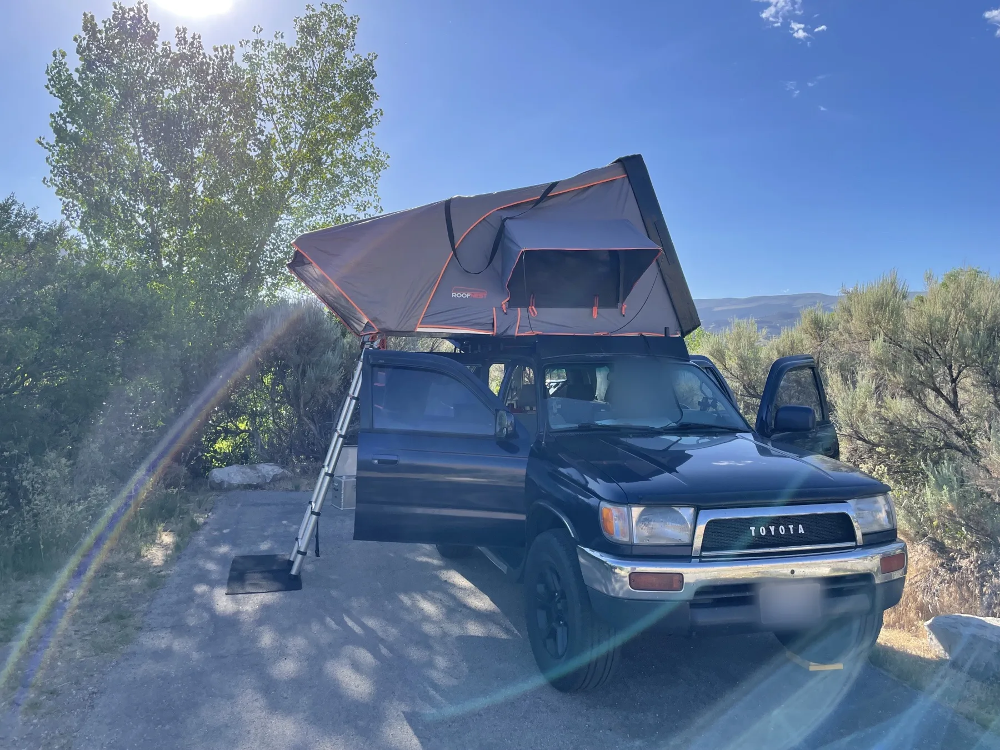
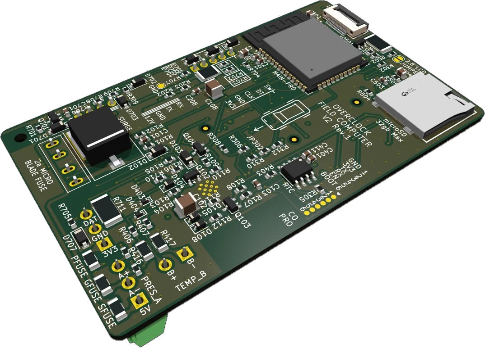
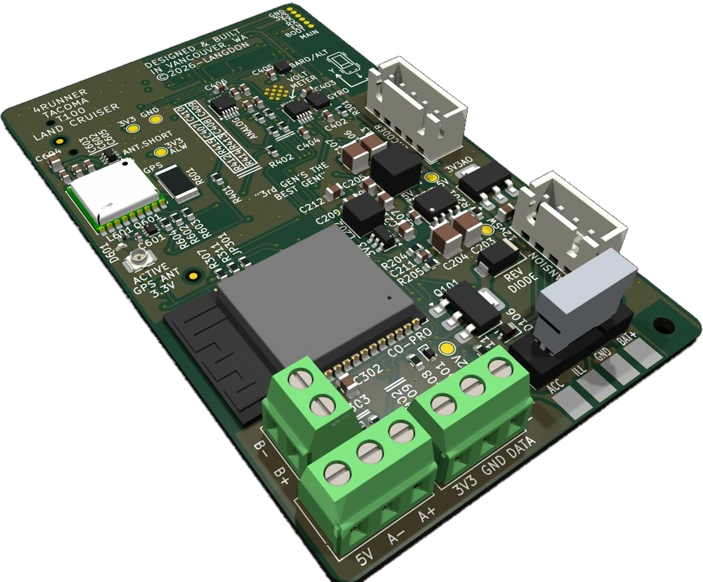
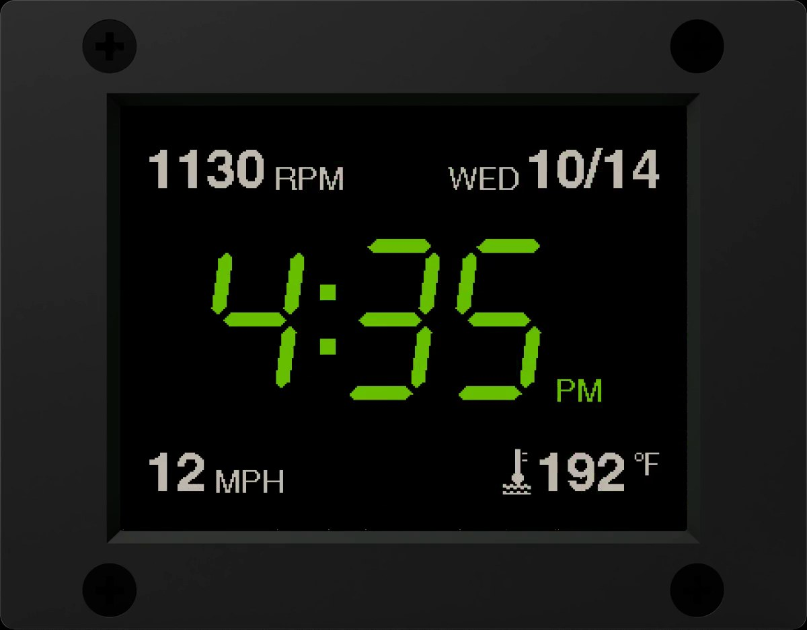

FEATURES
It's a computer, not a gauge, and it fits in the factory clock opening on the factory plug. I went looking for one and nobody made it, so I built it.
ENGINE WATCH
FULL ENGINE DIAGNOSTICS
Checks for codes on every drive. Shows active and pending codes as they appear, and saves freeze-frame data for every one.
- Codes are explained in plain language, with a starting point for troubleshooting and a note on how serious they are.
- Enhanced freeze frame*. Your truck saves one freeze frame. Most readers show just that one. OVERCLOCK saves its own for every code, and keeps every second of the drive around it.
- Live engine gauges. Transmission temp comes from the engine computer on 1999 and newer automatics, or from an optional sender on older trucks.
- Oil pressure, fuel pressure or boost, shown live and logged, with an optional sensor. More about boost.
- Smog check and code clearing. See if the truck is ready for its emissions test, and clear codes when you choose to.
- Known codes. Living with a gas cap code? Mark it KNOWN and OVERCLOCK stops nagging: it stays on the list, comes back as one quiet line, and is never cleared for you. The truck's own check engine light still works as normal. Serious codes can never be marked.
Mark as known
One turn of the knob.

Explained once
Before the first one.

Still on the list
Just quieter.

When it comes back
One quiet line.

Never for serious ones
No option to hide it.

Live engine data and trouble codes require the Bluetooth OBD2 dongle and a 1996 or newer truck. *Enhanced freeze frame is taken from OVERCLOCK's own recording, within about 20 seconds of the code setting.
BOOST
Add a MAP sensor to the pressure port and OVERCLOCK becomes a boost gauge. It corrects itself live with its own barometer, so it reads true at any altitude.

- Psi of boost, inHg of vacuum. OVERCLOCK reads just like a mechanical boost gauge.
- Where you want it. Put boost on the gauges page, in a corner of the clock, or give it a page of its own with peak boost and vacuum at idle.
- Over-boost warning. You set your own boost limit, and the clock warns you when you go over it.
- Logged with every drive. Look back at your boost on any drive.
- Two sensors today. OVERCLOCK works with the AEM 30-2130-50 (3.5 bar) or a GM 3-bar MAP sensor (part 12223861). Boost uses the same port as oil or fuel pressure, so it takes that spot. Sender support
- Try it. See boost in the live demo.
Vacuum
Off the throttle.

Gauges
Boost in any pane.

Clock page
Boost in a corner.

Setup
Pick BOOST, then the sensor.

Asked once
Warning or no warning.

Your limit
No default. You pick it.

Over the limit
Full screen.

Metric
Bar, negative in vacuum.

ALERTS
Watches the whole time and takes over the screen for serious issues like high coolant or transmission temperature.
- Over-voltage. You'll know right away if the voltage regulator fails.
- Not charging. You'll know if the alternator stops charging.
- Serious engine codes. Critical codes take over the full screen.
- Low oil pressure. With the optional sender, OVERCLOCK tells you to stop the engine.
- Over-boost. With a boost sensor, OVERCLOCK warns you when you go over the limit you set.
- Notices gradual problems that would otherwise only show up after something fails.
- Fridge and freezer. Set your own temperature limits and get a warning when they're crossed.
- Towing. OVERCLOCK watches transmission and coolant temps and warns you when they climb.
TEMPERATURE SENSORS
Up to four wired probes and four wireless sensors, each with a name (fridge, outside, etc.). The temperature page only shows the ones you have.
- New: wireless sensors. Works with RuuviTag Pro 2in1 and 3in1 sensors. Nothing to wire through the cab and no phone app. Add and name them with the knob. Sold separately by Ruuvi. See how.
- Logged while you're parked. OVERCLOCK wakes on its parked schedule and records every wireless sensor, so you can see how the fridge did while you were away.
- Fridge and freezer alerts. You choose the temperature limits.
- Trans temp. There's a dedicated input for a transmission temp sender.
- Logged with everything else. Each probe and sensor keeps a 24-hour history too.
- Simple to add. All four probes share one screw terminal, so adding another is just a few more wires.
- Which probes and senders? See the ones it supports today.
- Coming next. Humidity and dew point from a 3in1 sensor.
GPS AND LOGGING
INTEGRATED GPS
Built-in GPS. Sets the clock and time zone automatically. No phone or subscription needed.
- GPS ground speed. OVERCLOCK stays accurate no matter what size tires you run.
- Compares GPS distance against the engine data so its mileage stays accurate.
- Altitude, climb and grade. The barometer and GPS work together, and it keeps a total of your climb and descent.
- Auto dimming. The screen dims with your headlights, or at local sunset and sunrise.
- Fuel stop detection. After you fill up, OVERCLOCK asks you to log the fill.
- Border crossing alerts. GPS tells you when you cross into a new state.
- Places and home. Save places you go often and get a summary of each trip.
DRIVE LOGS
Logs more than 70 readings every second of every drive, plus every alert. It's all on the SD card in the dash.
- Every start, every code, every tank. OVERCLOCK measures battery voltage before each start and the dip while cranking, saves every code with its freeze frame, and tracks real gallons against real miles.
- Wakes up on a schedule while the truck is parked to keep logging trends. It draws very little power and shuts off if the battery gets low.
- Room for decades. An 8 GB card holds about 20 years of driving at 1,500 miles a month, and it takes cards up to 32 GB.
- Spreadsheet-ready logs. Open them in any spreadsheet and graph anything against anything.
- Your drives on a map. Export any drive as KML or GPX for Google Earth or any map app.
- Privacy first. One switch turns off location logging.
From real OVERCLOCK logs
- 1,482miles logged
- 1.2Mreadings
- 80starts measured
- 0.04%dash miles vs GPS
FUEL TRACKING
Calculates MPG from the engine data and gets more accurate every time you log a fill-up.
- This tank, last tank, range. See your mpg tank by tank and how far you can go on what's left.
- Fuel station memory. OVERCLOCK learns where you fill up and reminds you to log the fill.
- Cost over time. Every fill-up is saved with the date, miles, gallons and price, so you can see your cost per month, per trip or per mile.
WORK MILEAGE LOG
If you drive your truck for work, OVERCLOCK keeps the mileage log for you.


- Mark each drive work or personal. It takes one tap on your phone, and you can add a note about where you went and why.
- The details are already recorded. OVERCLOCK saves the date, the start and end time, the odometer at both ends and the miles for every drive.
- Totals by month and by year. You can see your work miles, your personal miles and the drives you haven't marked yet.
- One file at tax time. Download the year's work drives as a spreadsheet you can hand to your accountant.
- Fuel costs in the same place. Every fill-up is saved with the date, station, gallons and price, so your fuel spending is on record too.
- Your records stay with you. Everything is kept on the SD card in the dash. There is no account to set up.
ROAD TRIPS
Start a trip on the clock. It counts the miles, days, fuel and states, then hands the whole trip to your phone. It saves itself at every key-off.


- Live on the dash. Miles, hours, today's distance and money spent update as you drive.
- A summary worth keeping. At the end you get your best day, a fuel receipt, miles each day and the states you crossed.
- The whole route on your phone. Go day by day through every drive, elevation and fill-up, and export it to CSV, GPX or KML.
Live
Day 5, still going.

Fuel
What the trip has cost so far.

Each day
Every day on its own map.

Receipt
Gallons, mpg, cost per mile.

Miles each day
The long day stands out.

States
In the order you crossed them.

Days and fill-ups
The whole trip in one table.

PHONE CONNECTED
Change settings, download logs, or update the firmware from your phone over Wi-Fi.
- Trips. Every drive and road trip on a map, day by day.
- Your files. A calendar shows every day it recorded. Pick the days you want and download them as one file.
- Live data. Watch every reading the truck reports, live.
- Engine codes. All the code tools are on the phone too.
- Photos. Send your own pictures to the clock's slideshow.
- Updates over Wi-Fi. Each update is checked before it installs.
- Setup made easy. Set up Wi-Fi, the state map, fuel stations, solar and Bluetooth batteries from your phone.

Trips
Every drive on a map, by day. Road trips too.

Drives
Drives by date.

Live
Live graphs of any reading.

Codes
Codes, explained.

Photos
Send your own pictures to the clock's slideshow.

Dates
Birthdays, anniversaries and US holidays, on the clock on the day.

Firmware
Pick the file, send, verified before install.

Setup
Networks, solar, batteries, maps and data.

Networks
Saved networks.

Solar and batteries
Pair controllers, shunts and batteries. Combine into one bank.

Maps and data
Border map and fuel stations.

Dash log
Support log.

Want one? No payment to join the list.
OVERLAND
AT CAMP
Once the engine's off, it keeps watching your solar, your batteries, your fridge and the weather.
- Solar and house battery. Works with Victron and Renogy charge controllers over Bluetooth. It shows solar input, battery current and charge. Bluetooth lithium batteries are being tested brand by brand; link several and they show as one bank.
- Fridge and freezer watch. Add a wireless RuuviTag Pro sensor and it warns you before your food gets warm. Sensors are sold separately by Ruuvi.
- Camp level. It shows how much to raise each wheel to get level.
- Records while parked. It wakes every hour, 30 minutes or 15 minutes and records every wireless sensor, so you can see how the fridge did while you were away. Between wakes it draws under 1 mA.
- Storm warning. The built-in barometer watches overnight for incoming storms.
- Sunrise and sunset. Exact times for wherever you are.
- Starter battery health. It's checked every time you start the truck.




LOOKS AND HARDWARE
FACES AND LAYOUTS
2 fonts, 10 colors, 12 or 24-hour, four configurable corners.
- Four corners you can set how you want. There are five ready-made layouts, or save up to three of your own.
- Gauges change color based on the reading so you can see at a glance if something's off.
- Guided setup. The clock walks you through everything the first time you turn it on.
- Six startup screens, and you can put your truck's name under the logo. See them →
STILL A CLOCK
It goes where the factory clock was. Pick the retro face and it shows the time the way the original did.


PURPOSE-BUILT HARDWARE
Custom board designed for these trucks. Parts chosen to handle dash heat and vibration.


- Two processors, so the screen stays quick while it logs everything.
- A bright, sharp screen. It's readable in the sun and dims at night.
- Built-in barometer. OVERCLOCK tracks weather trends, warns of storms and checks your altitude against GPS.
- Precision voltmeter. It accurately measures resting, charging and cranking voltage.
- Built-in gyro and accelerometer for precise camp leveling and accurate off-road tilt.
- Protected. It's fused, surge-protected and safe if the power is hooked up backwards.
- Designed and tested in Washington.
EXPANDABLE
Use it as-is or add probes and senders later. You decide how much you want on it.

- Add sensors over time. Up to four probes, four wireless temp sensors, trans temp and oil or fuel pressure. Each appears as a gauge and in the logs once connected. See the senders it supports today.
- Add solar when you're ready. Pair it and it just works.
- Easy Wi-Fi updates from your phone, with new features added often.
- Room to expand. An expansion port leaves room for future add-ons. The Engine Module is the first.
COMING: THE ENGINE MODULE
One add-on box plugs into OVERCLOCK's expansion port and adds the extra gauges a boosted or engine-swapped truck wants. Price and date to be announced.
- Four more sender inputs. Add up to 4 more pressures and temperatures, so boost, oil pressure and fuel pressure can all show at once. Each input can be set for the sender you connect.
- Air-fuel ratio. A dedicated input reads AFR from your own wideband kit, so it doesn't use up a sender input.
- Exhaust temperature. Two inputs take K-type exhaust temperature probes.
- On the clock and in the logs. Every reading shows as a gauge on the clock and is logged with each drive.
- Tach output. The module drives the factory tachometer from OBD data on engine-swapped trucks.
- What you need. The module plugs into the expansion port on your OVERCLOCK. Sensors, probes and the wideband kit are not included.
Want one? No payment to join the list.